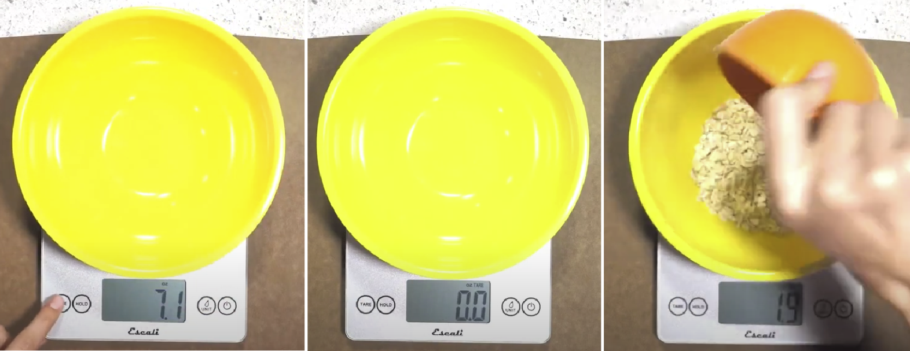
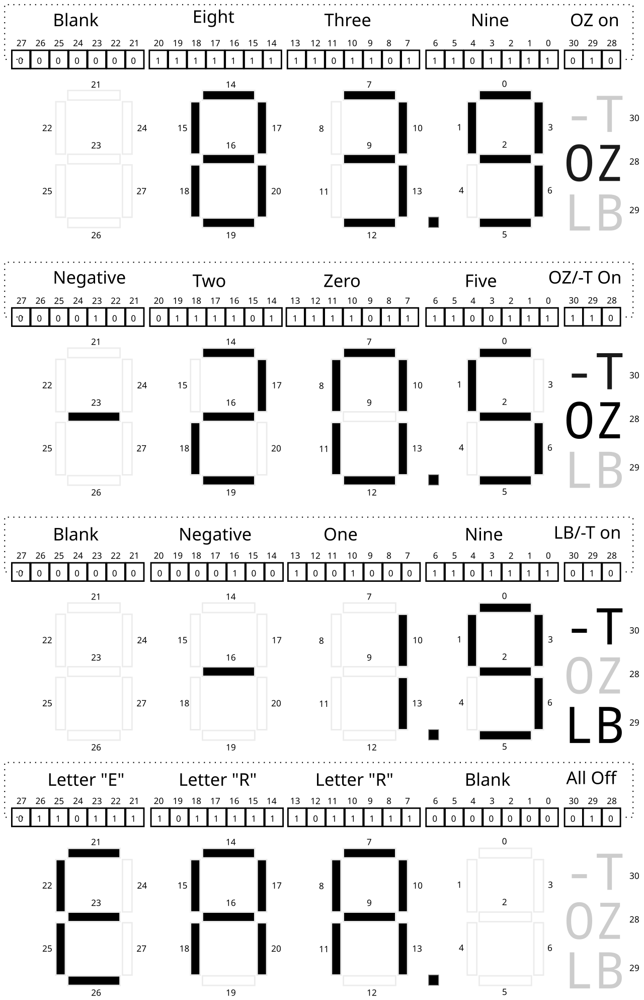
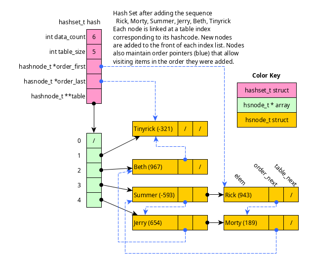

CMSC216 Project 2: Bit Ops, Debugging, Data Structures
- Due: 11:59pm Fri 14-Mar-2025
- Approximately 4.0% of total grade
- Submit to Gradescope
- Projects are individual work: no collaboration with other students is allowed. Seek help from course staff if you get stuck for too long.
CODE/TEST DISTRIBUTION: p2-code.zip
VIDEO OVERVIEW: Not Yet Available
CHANGELOG: Empty
1 Introduction
This project addresses more advanced C programming topics each in its own problem.
- Bit-level operations are common in C and systems programming. This assignment features a problem in which shifting and bitwise AND/OR-ing are required to complete the requirements.
- Debugging is also a critical skill enabled by the debugger. The
second problem in the assignment makes use of the GNU Debugger,
gdb, to work through a puzzle program requiring specific inputs to pass its "phases". - Data structures pervade computing and getting some practice with them in C will improve one's skill at pointers and memory usage while also giving a great appreciation for garbage collected languages. A basic "set" application which tracks a collection of unique values is implemented, backed by a hash table.
Difficulty Notice
Past students have found this content to be more challenging than Project 1.
If you were pressed for time to finish Project 1, start this project as early as possible. Most students have found the first two problems (bit manipulations and debugging) only mildly challenging but run out of time on the larger third problem.
You have been warned.
2 Download Code and Setup
Download the code pack linked at the top of the page. Unzip this which will create a project folder. Create new files in this folder. Ultimately you will re-zip this folder to submit it.
| File | State | Notes |
|---|---|---|
scale_update.c |
CREATE | Create this file and write required function in it to complete Problem 1 |
scale.h |
Provided | Problem 1 header file |
scale_main.c |
Provided | Problem 1 main() function for scale hardware simulation |
scale_sim.c |
Provided | Problem 1 suppor functions to assist with simulating scale device |
test_scale_update.c |
Testing | Problem 1 function tests for scale_upate.c |
test_scale.org |
Testing | Problem 1 testing data file |
testy |
Testing | Problem 1 test running script |
scale_examples.sh |
Provided | Problem 1 script to produce a variety of scale examples |
puzzlebox.c |
Provided | Problem 2 Debugging problem |
input.txt |
EDIT | Problem 2 Input for puzzlebox, fill this in |
hashset.h |
Provided | Problem 3 header file |
hashset_funcs.c |
CREATE | Problem 3 functions to write |
hashset_main.c |
CREATE | Problem 3 main function to write |
data/hashset_demo.script |
Data | Problem 3 sample input scripts to main program |
data/alphabet.script |
Data | |
data/rm.hashset |
Data | Problem 3 sample hash set save files |
data/alphabet.hashset |
Data | |
data/alphabet_expand.hashset |
Data | |
test_hashmap.org |
Testing | Problem 3 tests |
Makefile |
Provided | Build file to compile all programs |
testy |
Testing | Test running script |
Makefile
As in the first assignment, a Makefile is provided as part of this
project. The essential targets pertinent to each problem are described
in those sections. The Makefile is equipped with a brief help
listing:
>> make help Typical usage is: > make # build all programs > make clean # remove all compiled items > make zip # create a zip file for submission > make prob1 # built targets associated with problem 1 > make test # run all tests > make test-prob2 # run test for problem 2 > make test-prob2 testnum=5 # run problem 2 test #5 only > make update # download and install any updates to project files
Automated Tests
As in previous assignments, automated tests are provided and associated with problems. Each problem describes how to run tests associated with it. Generally this is done as before:
>> make test-prob1 gcc -Wall -Wno-comment -Werror -g -c scale_main.c gcc -Wall -Wno-comment -Werror -g -c scale_update.c ... ./testy -o md test_scale.org =========================================================================== == test_scale.org : Problem 1 test_scale_update and scale_main tests == Running 40 / 40 tests 1) scale_from_ports_01 : ok 2) scale_from_ports_02 : ok 3) scale_from_ports_03 : ok ... >> make test-prob2 # run "tests" associated with problem 2 ... >> ./puzzlebox input.txt # same as above: run puzzlebox to test answers
3 Problem 1: Digital Scale Simulation
3.1 Overview
You are tasked with writing code which will be run by a microcontroller in a digital scale. The hardware has the following relevant features.
- An internal sensor detects weight that is on the scale. The value reported by the device is stored in a special hardware location that is presented as a global variable to C programs.
- A digital display controlled by a hardware port. Setting a certain global variable will change the display to show information to a user of the device.
- User code that you will need to write to update the display based on the value reported by the internal sensors
- A simulator program with
Makefileto test your code
Each feature is discussed in subsequent sections.
3.2 Scale Features and Tare
The scale has the following features.
- Displays in either Ounces (OZ) or Pounds (LB); there are 16 ounces per pound
- Weight sensor detects changes of up 0.1 ounces
- Internal sensor that works for ranges of 0 to 99.9 ounces (and equivalent pounds)
- Has a "Tare" feature described below
Tare Feature
Many tabletop digital scales have a handy "TARE" functionality (Arabic for "that which is removed"). It is used to measure the weight of something in a container conveniently as follows.
- The empty container is placed on the scale
- The "TARE" button is pressed which stores the weight of the container in scale memory
- The container may be removed and filled with the actual material to be weighed; during that time, the scale will read a Negative weight
- The filled container is placed on the scale again and the weight of only the material is shown (internally the previous container weight is subtracted from the measured weight and displayed)
The diagram below shows steps 1, 2, and 4.

Figure 1: Example of using the Tare feature of the scale to weigh the contents of a container. The empty bowl is first placed on the scale and the "Tare" button is pressed before weighing the filled bowl.
3.3 Scale Hardware Ports
The Scale has hardware that is exposed through several global variables in C programs. These are as follows.
| Variable / Port | Purpose |
|---|---|
short SCALE_SENSOR_PORT |
The weight currently on the scale in tenths of ounces |
short SCALE_TARE_PORT |
A previously saved sensor value, usually subtracted to account for a "container" weight |
unsigned char SCALE_STAUS_PORT |
Indicates whether to display ounces or pounds, whether buttons are pressed |
int SCALE_DISPLAY_PORT |
Each bit controls part of the LCD display allowing weights to be shown |
Notes on each of the ports are included in the header file and are shown below. You do not need to define any of these variables as they already exist in the simulator / hardware. Some variables are read-only while others can be read and written. The objective is to write several functions which extract information from these variables and creates a display of the device state for a user. Details of how to go about this are described in subsequent functions.
extern short SCALE_SENSOR_PORT; // Set by the hardware to indicate the load placed on the scale. The // sensor is in units of 0.1 oz so that a sensor value of 238 would be // 23.8 ounces. If negative or greater than 999, a hardware error has // occurred. This port should only be read from. extern short SCALE_TARE_PORT; // Internal hardware that stores a previous sensor value for use later // such as to subtract off the weight of a container on the scale to // determine the weight of its contents. If this value is negative or // greater than 999, a hardware error has occurred. This port may be // read or written to. extern unsigned char SCALE_STATUS_PORT; // A series of bits indicating various aspects of the scale's state as // detected by the hardware. While there are 8 bits, only 2 of them // are used by the software. The bits are as follows: // // Bit 0: Unused // Bit 1: Unused // Bit 2: Unit Select, 0 for ounces (oz), 1 for pounds (lb) // Bit 3: Unused // Bit 4: Unused // Bit 5: Tare Button, 1 for pressed, 0 for not // Bit 6: Unused // Bit 7: Unused // // This port should only be read from. extern int SCALE_DISPLAY_PORT; // Controls the scale display. Readable and writable. Routines // wishing to change the display should alter the bits of this // variable.
3.4 Scale Structs and Defines
During processing, the functions that are required need to pass
several pieces of data around that describe the state of the
device. These are summarized in a struct that is defined in the header
file and shown below. The documentation associated with the struct and
#define'd constants are used in functions to manipulate the machine
state.
////////////////////////////////////////////////////////////////////////////////
// scale data and structs
#define UNIT_KG 1 // show kilograms
#define UNIT_LB 2 // show pounds (2.2 pounds per kg)
#define MODE_SHOW 1 // show measured weight as sensor_val - tare_val
#define MODE_TARE 2 // store the sensor_val into tare_val, Tare Indicator on
#define MODE_ERROR 4 // error of some kind
// store state of the scale in a struct for easier access
typedef struct{
short weight; // calculated weight for use elsewhere
char mode; // one of the MODE_XX values indicating what to do/show
char indicators; // Bit field with 1's for different indicators
// Bit 0: Ounce Indicator On/Off
// Bit 1: Pound Indicator On/Off
// Bit 2: Tare Indicator On/Off, on when stored Tare value is non-zero
} scale_t;
3.5 scale_update.c Outline
Periodically the microcontroller managing the scale will call
scale_update() which should access the sensors/ports and set the
display using several functions are used to subdivide this task. The
functions to write for the problem are outlined below. Each includes
documentation about what is to be done in the function and constraints
on the implementation. Details about how to format the digital display
described in later sections.
// scale_update.c: functions that read scale hardware, convert its // encode its state in a struct, and adjusts the display to show the // user information. #include "scale.h" int scale_from_ports(scale_t *scale); // Uses the values in SCALE_SENSOR_PORT, SCALE_TARE_PORT, and // SCALE_STATUS_PORT to set the fields of the `scale` struct to // appropriate values. // // Does bound checking so that if the SCALE_SENSOR_PORT or // SCALE_TARE_PORT is out of range (see their docs) sets the fields of // scale to be 0's, sets the scale->mode to be MODE_ERROR, and // returns 1. // // If SCALE_STATUS_PORT indicates the Tare button is being pressed // (see that variable's docs), sets fields of `scale` to be 0, sets // the mode to be MODE_TARE, and returns 2. // // Otherwise sets the fields of scale as follows. // // - mode :: set to MODE_SHOW to show the display weight as normal // // - weight :: set to (SCALE_SENSOR_PORT - SCALE_TARE_PORT). Converts // to pounds if SCALE_STATUS_PORT indicates that is the desired // unit. Conversion is done using bit shifting / masking and rounds // pounds up if the ounces are halfway to the next pound. // // - indicators :: sets a bit to turn on either the Ounce or Pound // Indicator light. If the SCALE_TARE_PORT is not zero, sets a bit // to turn on the Tare indicator light. See documentation for the // scale_t struct for which bits control which indicator lights. // // CONSTRAINTS: Uses only integer operations. No floating point // operations are used as the target machine does not have a FPU. Does // not use any math functions such as abs(). // // CONSTRAINTS: Does not use integer division; uses bit shifting and // masking to compute division by powers of two and perform rounding. // // CONSTRAINT: Limit the complexity of code as much as possible. Do // not use conditionals nested deeper than 2 levels. Seek to make the // code as short, and simple as possible. Code longer than 70 lines // may be penalized for complexity. int scale_display_special(scale_t scale, int *display); // Sets the bits pointed at by `display to indicate one of two // "special" cases. // // If scale.mode is MODE_ERROR, sets the display to "ERR" to indicate // that the weight is out of range or some other hardware error has // occurred. // // If scale.mode is MODE_TARE, sets the display to "STOR" to indicate // that the Tare button is being pressed and the current weight will be // stored in the internal saved weight space. // // In both the above cases, only changes the bits pointed at by // `display` and returns 0. Does not make any other changes to the // machine state. // // If scale.mode is a different value that one of the above two cases, // this function has been called in error and returns 1. // // CONSTRAINT: This function should not access or change any global // variables. // // CONSTRAINT: Limit the complexity of code as much as possible. Do // not use conditionals nested deeper than 2 levels. Seek to make the // code as short, and simple as possible. Code longer than 35 lines // may be penalized for complexity. int scale_display_weight(scale_t scale, int *display); // Called when scale.mode is MODE_SHOW. If it is not, this function // returns 1 immediately and makes no other changes. // // For scale.mode of MODE_SHOW, sets `display` bits to indicate the // weight in scale.weight. Uses integer division to determine digits // to be shown in `display` and whether a negative sign should be // present. Sets bits of `display` according to the bits in // scale.indicators to show ounces / pounds as the unit and indicate a // non-zero tare. Returns 0 on completion. // // CONSTRAINT: This function should not access or change any global // PORT variables. It may use a global array of bit patterns if deemed // useful. // // CONSTRAINT: Limit the complexity of code as much as possible. Do // not use conditionals nested deeper than 2 levels. Seek to make the // code as short, and simple as possible. Code longer than 65 lines // may be penalized for complexity. int scale_update(); // Updates the state of scale using previously defined functions. Uses // stack space for a scale_t struct which is set from the ports and // then used to alter the display. If the MODE_TARE is indicated, then // copies SCALE_SENSOR_PORT to SCALE_TARE_PORT. Returns 0 if the // display is set properly and 1 if an error occurs while setting the // display. // // CONSTRAINT: Does not allocate any heap memory as malloc() is NOT // available on the target microcontroller. Uses stack and global // memory only. // // CONSTRAINT: Limit the complexity of code as much as possible. Do // not use conditionals nested deeper than 2 levels. Seek to make the // code as short, and simple as possible. Code longer than 20 lines // may be penalized for complexity.
3.6 Diagram of Display
The overall display is formed with several adjacent digits along with
an other indicator lights display. The diagram below shows several
examples of these along with the vale for the 32-bit DISPLAY_PORT
that would create the display.

Figure 2: Examples of how the bits of the DISPLAY_PORT control which parts of the display are shown. Each digit follows the same pattern of bit to bar correspondence as the right-most with bits. That pattern appears in a later diagram. The highest order bits (28-31) control indicator lights as shown. Note that several conflicting indicators could be shown at the same time but the code setting the display should not do this normally.
Notice the following.
SCALE_DISPLAY_PORTis accessed as a 32-bit integer- 31 bits are used to control the full display
- Bits 0-6 control the tenths place
- Bits 7-13 control the ones place
- Bits 14-20 control the tens place
- Bits 21-27 control the hundreds place though this is only used for a negative sign
- Bit 28 turns on the OZ indicator
- Bit 29 turns on the LB indicator
- Bit 30 turns on the
-T(non-zero Tare) indicator - Bit 31 is not used
3.7 Digit Patterns
Each part of the LCD display is controlled with individual bits. The Digits follow a regular pattern where each bit darkens certain bars in the display allowing numbers and some letters to be shown. The pattern is repented in the diagram below and should likely be encoded somewhere in the program.

Figure 3: Bit to digit display bar correspondence. The 0th bit controls the top horizontal bar, the 1th bit controls the horizontal bar counter-clockwise from it, the 2th bit the middle bar, and so on working top to bottom, left to right. When a bit is 1 (set), the bar will be darkened while when the bit is 0 (clear) the bar will not be displayed (shown as empty). The combinations of bits shown are the only ones that arise when showing digits for times.
Notice the following.
- Bits that are set (equal to 1) will turn on (darken) one bar of the display digit
- Bits that are clear (equal to 0) will turn off one bar of the digit
- 7 bits are required to control the display of one digit
- The bits are arranged with the low order bit (bit 0) at the top and
progress top-to-bottom and left-to-right
- Bit 0 top
- Bit 1 upper left
- Bit 2 middle
- Bit 3 upper right
- Bit 4 lower left
- Bit 5 bottom
- Bit 6 lower right
- The programmer can set bits to any pattern which will be displayed but only patterns shown in the figure correspond to digits of interest.
To create a mult-digit display, one can set bits, then shift those bits left to place the digit further to the left in the display. All digits follow the above pattern which allows for easy combination.
3.8 Implementation Hints
Bit Shifts VS Division
Review the correspondence between right shift operations and division and note that any bits shifted off would be the remainder of a division.
Digit Bit Patterns
While creating the bit display pattern in scale_display_weight(), a
good trick to use when create a series of bit patterns that correspond
to the various digits. For example, according to the diagrams above,
the bit pattern for 9 is 0b1101111. If a 9 should appear on the
clock somewhere, this bit pattern should be shifted and combined with
the existing bits in display so that a 9 will show.
It may be worthwhile to create bit patterns for other items like Letters or the Negative sign. This can be done in several ways but a common one is via defining "symbols" or global variables.
// "symbol" defining a bit pattern
#define SOME_PATTERN 0b1101001
// global variable defining a bit pattern
int OTHER_PATTERN = 0b0010110;
// global array of patterns
int my_patterns[2] = {
0b0101010,
0b1111110,
};
Here is detailed explanation of one approach to the laying out a multi-digit pattern.
- Create an array of bit masks for each of the digits 0-9. The 0th
element of the array contains a bit pattern like
0b1111011which represents the bits that should be set for a 0 digit, the 1th element of this array has a pattern for one, and so one. There should be ten entries in this array in indices 0-9. - For a given number like 839, use modulo to determine the integer
value for the ones, tens, and hundreds digits in the number. Call
these variables something like
onesandtensetc.. Each variable should be in the range 0-9. - Start with a state variable of 0 (all 0 bits).
- Use
onesto index into your array of masks to determine the bits that should be set for it. Combine the state variable withonesbit pattern. - Combining bits here is a logical operation of setting all bits that are one in the pattern to 1 in the state variable.
- Use
tensto index into your array of masks for the right pattern for that digit. The bits corresponding to the tens place is shifted to the left by 7 bits so shift the pattern to the left and combine it with the state variable. - Repeat this process for the remaining digits required (shifted by 14 and 21 bits left for the other two digits).
- Account in some way for negativity: the negative sign must be placed if the value is less than 0
- Keep in mind that the display has a few special cases: no leading 0 should be shown in the tens place if the quantity is small
- Set the high bits (28-30) using shifts according to any indicators that are present.
- The state variable should now be populated.
3.9 Scale Simulator and Main
While we do not have actual hardware with the features mentioned, a
simulator for the system is in the provided files scale_main.c
and scale_sim.c. You do not need to modify or understand code in
either file to complete the HW though it will certainly expand you C
skills to spend some time examining them. Several functions are
created along with the global variables that represent parts of the
hardware.
You can build simulator executable via make. The main() function
in accepts a command line argument which specifies the internal state
of the machine. It then calls the update function and shows the
resulting display.
Below are several sample runs of the simulator which show the results of running on several example inputs.
########## EXAMPLE 1 ##########
>> ./scale_main
usage: ./scale_main {sensor_val} {tare_val} {oz|lb} {tare_no|tare_yes}
sensor_val: integer
########## EXAMPLE 2 ##########
>> ./scale_main 0 0 oz tare_no
SCALE_SENSOR_PORT: 0
SCALE_TARE_PORT: 0
SCALE_STAUS_PORT: 0000 0000
index: 4 0
result = scale_from_ports(&scale);
result: 0
scale = {
weight = 0
mode = 1
indicators = 00000 001
}
result = scale_update();
result: 0
SCALE_SENSOR_PORT: 0
SCALE_TARE_PORT: 0
SCALE_DISPLAY_PORT:
bits: 0 001 0000000 0000000 1111011 1111011
index: 28 21 14 7 0
Scale Display:
~~ ~~
| | | |
| | | | OZ
~~ o ~~
########## EXAMPLE 3 ##########
>> ./scale_main 5 0 oz tare_no
SCALE_SENSOR_PORT: 5
SCALE_TARE_PORT: 0
SCALE_STAUS_PORT: 0000 0000
index: 4 0
result = scale_from_ports(&scale);
result: 0
scale = {
weight = 5
mode = 1
indicators = 00000 001
}
result = scale_update();
result: 0
SCALE_SENSOR_PORT: 5
SCALE_TARE_PORT: 0
SCALE_DISPLAY_PORT:
bits: 0 001 0000000 0000000 1111011 1100111
index: 28 21 14 7 0
Scale Display:
~~ ~~
| | |
~~
| | | OZ
~~ o ~~
########## EXAMPLE 4 ##########
>> ./scale_main 839 0 oz tare_no
SCALE_SENSOR_PORT: 839
SCALE_TARE_PORT: 0
SCALE_STAUS_PORT: 0000 0000
index: 4 0
result = scale_from_ports(&scale);
result: 0
scale = {
weight = 839
mode = 1
indicators = 00000 001
}
result = scale_update();
result: 0
SCALE_SENSOR_PORT: 839
SCALE_TARE_PORT: 0
SCALE_DISPLAY_PORT:
bits: 0 001 0000000 1111111 1101101 1101111
index: 28 21 14 7 0
Scale Display:
~~ ~~ ~~
| | | | |
~~ ~~ ~~
| | | | OZ
~~ ~~ o ~~
########## EXAMPLE 5 ##########
>> ./scale_main 839 125 oz tare_no
SCALE_SENSOR_PORT: 839
SCALE_TARE_PORT: 125
SCALE_STAUS_PORT: 0000 0000
index: 4 0
result = scale_from_ports(&scale);
result: 0
scale = {
weight = 714
mode = 1
indicators = 00000 101
}
result = scale_update();
result: 0
SCALE_SENSOR_PORT: 839
SCALE_TARE_PORT: 125
SCALE_DISPLAY_PORT:
bits: 0 101 0000000 1001001 1001000 1001110
index: 28 21 14 7 0
Scale Display:
~~
| | | | -T
~~
| | | OZ
o
########## EXAMPLE 6 ##########
>> ./scale_main 0 125 oz tare_no
SCALE_SENSOR_PORT: 0
SCALE_TARE_PORT: 125
SCALE_STAUS_PORT: 0000 0000
index: 4 0
result = scale_from_ports(&scale);
result: 0
scale = {
weight = -125
mode = 1
indicators = 00000 101
}
result = scale_update();
result: 0
SCALE_SENSOR_PORT: 0
SCALE_TARE_PORT: 125
SCALE_DISPLAY_PORT:
bits: 0 101 0000100 1001000 0111101 1100111
index: 28 21 14 7 0
Scale Display:
~~ ~~
| | | -T
~~ ~~ ~~
| | | OZ
~~ o ~~
########## EXAMPLE 7 ##########
>> ./scale_main 839 125 lb tare_no
SCALE_SENSOR_PORT: 839
SCALE_TARE_PORT: 125
SCALE_STAUS_PORT: 0000 0100
index: 4 0
result = scale_from_ports(&scale);
result: 0
scale = {
weight = 45
mode = 1
indicators = 00000 110
}
result = scale_update();
result: 0
SCALE_SENSOR_PORT: 839
SCALE_TARE_PORT: 125
SCALE_DISPLAY_PORT:
bits: 0 110 0000000 0000000 1001110 1100111
index: 28 21 14 7 0
Scale Display:
~~
| | | -T
~~ ~~
| |
o ~~ LB
########## EXAMPLE 8 ##########
>> ./scale_main 839 125 lb tare_yes
SCALE_SENSOR_PORT: 839
SCALE_TARE_PORT: 125
SCALE_STAUS_PORT: 0010 0100
index: 4 0
result = scale_from_ports(&scale);
result: 2
scale = {
weight = 0
mode = 2
indicators = 00000 000
}
result = scale_update();
result: 0
SCALE_SENSOR_PORT: 839
SCALE_TARE_PORT: 839
SCALE_DISPLAY_PORT:
bits: 0 000 1100111 1001001 1111011 1011111
index: 28 21 14 7 0
Scale Display:
~~ ~~ ~~ ~~
| | | | | |
~~ ~~
| | | | | |
~~ ~~ o
########## EXAMPLE 9 ##########
>> ./scale_main -15 0 oz tare_no
SCALE_SENSOR_PORT: -15
SCALE_TARE_PORT: 0
SCALE_STAUS_PORT: 0000 0000
index: 4 0
result = scale_from_ports(&scale);
result: 1
scale = {
weight = 0
mode = 4
indicators = 00000 000
}
result = scale_update();
result: 0
SCALE_SENSOR_PORT: -15
SCALE_TARE_PORT: 0
SCALE_DISPLAY_PORT:
bits: 0 000 0110111 1011111 1011111 0000000
index: 28 21 14 7 0
Scale Display:
~~ ~~ ~~
| | | | |
~~ ~~ ~~
| | | | |
~~ o
########## EXAMPLE 10 ##########
>> ./scale_main 0 -48 lb tare_no
SCALE_SENSOR_PORT: 0
SCALE_TARE_PORT: -48
SCALE_STAUS_PORT: 0000 0100
index: 4 0
result = scale_from_ports(&scale);
result: 1
scale = {
weight = 0
mode = 4
indicators = 00000 000
}
result = scale_update();
result: 0
SCALE_SENSOR_PORT: 0
SCALE_TARE_PORT: -48
SCALE_DISPLAY_PORT:
bits: 0 000 0110111 1011111 1011111 0000000
index: 28 21 14 7 0
Scale Display:
~~ ~~ ~~
| | | | |
~~ ~~ ~~
| | | | |
~~ o
########## EXAMPLE 11 ##########
>> ./scale_main 0 -48 oz tare_yes
SCALE_SENSOR_PORT: 0
SCALE_TARE_PORT: -48
SCALE_STAUS_PORT: 0010 0000
index: 4 0
result = scale_from_ports(&scale);
result: 1
scale = {
weight = 0
mode = 4
indicators = 00000 000
}
result = scale_update();
result: 0
SCALE_SENSOR_PORT: 0
SCALE_TARE_PORT: -48
SCALE_DISPLAY_PORT:
bits: 0 000 0110111 1011111 1011111 0000000
index: 28 21 14 7 0
Scale Display:
~~ ~~ ~~
| | | | |
~~ ~~ ~~
| | | | |
~~ o
3.10 Problem 1 Grading Criteria grading 30
| Weight | Criteria |
|---|---|
| AUTOMATED TESTS | |
| 20 | make test-prob1 which uses programs test_scale_update and scale_main |
Provides 40 tests for functions in scale_update.c |
|
| 0.5 point per test passed | |
MANUAL INSPECTION of scale_update.c |
|
| 2 | Code Style: Functions adhere to CMSC 216 C Coding Style Guide which dictates |
| reasonable indentation, commenting, consistency of curly usage, etc. | |
| 3 | scale_from_ports() |
| Clear effort to do error checking of out of bounds values. | |
Clear flow to how each field of scale_t is calculated. |
|
Correctly setting fields of scale_t via pointer dereference or arrow operator. |
|
| Makes use of shift / logical operations to convert port value to seconds | |
| Adherence to constraints: no floats, no float math ops, no deeply nested conditionals, code length | |
| 3 | scale_display_special() / scale_display_weight() |
| Clear error checking of for the appropriate MODE in both functions | |
| Use of bitwise operators to shift bits appropriately | |
| Use of bitwise operators to combine shifted digit bits | |
| Clear calculation digits to be displayed | |
| Use of bit masks stored in arrays with indices corresponding to digits to be displayed | |
Clear derference/set of the integer pointed to by the display parameter |
|
| Refrains from accessing / altering global PORTS | |
| Adherence to constraints: no floats, no math float ops, no deeply nested conditionals, code length | |
| 2 | scale_update() |
| Does not re-define / re-declare these variables, only checks / alters their values | |
| Use of previous two functions | |
Adjusts SCALE_TARE_PORT when MODE_TARE is detected |
|
No use of malloc() |
4 Problem 2: Debugging the Puzzlebox
4.1 Overview
The file puzzlebox.c contains source code that reads inputs from a
file named on the command line. If the inputs are correct, points are
awarded. If inputs are incorrect, error messages are printed.
The puzzlebox is arranged into a series of phases each of which
has some points associated with it.
- Not all phases must be completed to get full credit but the phases must done in order.
- Each phase reads inputs from the file provided on the command line and performs calculations on them to see if they are "correct" according to various criteria
- The very first input is your internet ID like
kauf0095(first part of your UMN email address). This input is used to add randomness to the puzzle so that your answers will be different from most other students. You must you use your own internet ID.
The purpose of this problem is get familiar with using a debugger.
This is a powerful tool that pauses programs, allows internal values
to be printed and code to be stepped through line by line. It is
nearly essential to use as the code in puzzlebox is intentionally
convoluted in places. Being able to pause execution and print values
at various points make it much easier to solve the puzzles.
4.2 input.txt Input File
Name your input file input.txt and put your internet ID in it along
with some numbers like 1 2 3. Then compile and run the puzzlebox
program on it.
>> make puzzlebox # compile puzzlebox gcc -Wall -g -c puzzlebox.c gcc -Wall -g -o puzzlebox puzzlebox.o >> cat input.txt # show contents of input.txt kauf0095 1 2 3 >> puzzlebox input.txt ======================================== PROBLEM 2: Puzzlebox UserID 'KAUF0095' accepted: hash value = 1936486779 PHASE 1: A puzzle you say? Challenge accepted! Ah ah ah, you didn't say the magic word... Failure: Double debugger burger, order up! RESULTS: 0 / 30 points
This is automated with the Makefile target make test-prob2:
>> make test-prob2 # compile/run puzzlebox with input.txt gcc -Wall -g -c puzzlebox.c gcc -Wall -g -o puzzlebox puzzlebox.o puzzlebox input.txt ======================================== PROBLEM 2: Puzzlebox UserID 'KAUF0095' accepted: hash value = 1936486779 PHASE 1: A puzzle you say? Challenge accepted! Ah ah ah, you didn't say the magic word... Failure: Double debugger burger, order up! RESULTS: 0 / 30 points
These initial forays are not positive (0 / 30 points) but the real
meat of the problem is in examining the source code and determining
inputs for input.txt.
4.3 gdb The GNU Debugger
You will definitely need to use a debugger to solve the puzzlebox and
gdb is the quintessential debugger associated with our compiler
gcc. It is installed by default on all lab machines and is an easy
install on must Linux machines.
For a quick overview of GDB, here are some resources
- Quick Guide to gdb: The GNU Debugger: Page describing how
to start the debugger, a sample session using
puzzlebox, an overview of the most common commands. - CppCon 2015: Greg Law " Give me 15 minutes & I'll change your view
of GDB": Video giving basic overview of hope to run
gdbon simple programs with an emphasis on differences between "normal" mode and TUI mode - GNU GDB Debugger Command Cheat Sheet: Extensive list of commands
- Debugging with GDB: Official manual for
gdb
4.4 Typical Cycle
A typical cycle of working on puzzlebox will be the following.
Start the debugger with puzzlebox
>> gdb -tui ./puzzlebox
Set the arguments array to
input.txtset args input.txt
Set a breakpoint at a phase like
phase03break phase03
Run the program
run
Do some stepping / nexting
step next
Print some variables
print normal_val print/x val_in_hex print/t val_in_binary
- Make some changes to
input.txtin a different window Re-run the program to see if things have changed favorably
kill run
4.5 Kinds of Puzzles
The puzzles presented in the different phases make use of a variety of C program techniques which we have or will discuss including.
- Bit-wise operations and their use in place of arithmetic
- String and character array manipulations
- Interpreting bits as one of several kinds of things (integer, float, character) through pointers and unions
- More extensive C control structures like
gotoand labels
4.6 Tests for puzzlebox.c grading 30
puzzlebox.c itself reports how many points one can earn at the end
of its execution.
Currently there are 40 points available but 30 points is considered full credit.
If any additional points are earned, they will be counted as Makeup Credit for Projects to make up for credit lost on past or future projects. Your total score on All Projects cannot exceed 100% so any points beyond will simply be dropped.
Run the following command to 'test' puzzlebox:
make test-prob2
5 Problem 3: Hash Tables in C
5.1 Overview
This problem implements a rudimentary hash table application in C along with a program that uses it. The architecture is similar to a lab problem involving linked lists so reviewing that code can provide some insight.
Basic Hash Tables are covered in most introductory data structure classes such as CSCI 1913 and 1933. Should you need to review them, the following resources may prove useful.
- Wikipedia Article on Hash Tables: Provides general overview of the data structure. Specifically focus on Separate Chaining with Linked Lists which is the style of hash table implemented in the assignment.
- Youtube "Data Structures: Hash Tables" by HackerRank: Short video summarizing major concepts of hash tables in any programming language. Explains briefly hash code functions and the Separate Chaining architecture we will use.
- Youtube "How HashMap works in Java" by Ranjith Ramachandran: Short video which includes a detailed walk-through of adding elements to a separately chained hash table. Somewhat Java-centric including use of a different mapping of hash codes to array indices than we will use. Also note that they Key/Value structure used there is for a Map whereas we will use a Set where the Key/Val are identical and referred to as an Element.
Our particular variant will be a Hash Set which is a collection of elements (strings) which are each unique. The hash table is used to quickly add new elements and check whether an element is contained in the set. The hash table will use the separate chaining technique to resolve hash code conflicts: each hash "bucket" has a singly linked list of elements in that bucket.
Additionally, the hash set will maintain a record of the order elements are added by overlaying a linked list on elements as they are added. This allows for efficient traversal of the hash table elements for printing and gives a queue-like feel to parts of the table.
5.2 hashset_main Demonstration
The intent of this problem is to develop a small application which behaves as the following demo indicates.
>> make hashset_main # Compile hash table application
gcc -Wall -Wno-comment -Werror -g -c hashset_main.c
gcc -Wall -Wno-comment -Werror -g -c hashset_funcs.c
gcc -Wall -Wno-comment -Werror -g -o hashset_main hashset_main.o hashset_funcs.o
>> ./hashset_main # start application, shows help message with commands
Hashset Application
Commands:
hashcode <elem> : prints out the numeric hash code for the given key (does not change the hash set)
contains <elem> : prints the value associated with the given element or NOT PRESENT
add <elem> : inserts the given element into the hash set, reports existing element
print : prints all elements in the hash set in the order they were addded
structure : prints detailed structure of the hash set
clear : reinitializes hash set to be empty with default size
save <file> : writes the contents of the hash set to the given file
load <file> : clears the current hash set and loads the one in the given file
next_prime <int> : if <int> is prime, prints it, otherwise finds the next prime and prints it
expand : expands memory size of hash set to reduce its load factor
quit : exit the program
HS> print # prints items in order, empty initially
HS> structure # show hash table structure, empty intitially
elem_count: 0
table_size: 5
order_first: NULL
order_last : NULL
load_factor: 0.0000
[ 0] :
[ 1] :
[ 2] :
[ 3] :
[ 4] :
HS> add Rick # add items table
HS> add Morty
HS> print # show items in order added
1 Rick
2 Morty
HS> structure # show internal structure of the hash table
elem_count: 2
table_size: 5
order_first: Rick
order_last : Morty
load_factor: 0.4000
[ 0] : # some buckets are empty
[ 1] :
[ 2] :
[ 3] : {2546943 Rick >>Morty} # nodes show hash code, string stored, next string
[ 4] : {74531189 Morty >>NULL} # last item added, points to null
HS> add Summer # add more items
HS> add Jerry
HS> add Beth
HS> add Tinyrick
HS> print # print items in order added
1 Rick
2 Morty
3 Summer
4 Jerry
5 Beth
6 Tinyrick
HS> structure # show structure
elem_count: 6 # NOTE: recently added items added to front of bucket lists
table_size: 5
order_first: Rick
order_last : Tinyrick
load_factor: 1.2000
[ 0] :
[ 1] : {-1964728321 Tinyrick >>NULL}
[ 2] : {2066967 Beth >>Tinyrick}
[ 3] : {-1807340593 Summer >>Jerry} {2546943 Rick >>Morty}
[ 4] : {71462654 Jerry >>Beth} {74531189 Morty >>Summer}
HS> contains Jerry # check if items contained / not in hashset
FOUND: Jerry
HS> contains Rick
FOUND: Rick
HS> contains Unity
NOT PRESENT
HS> contains President
NOT PRESENT
HS> add Jerry # items are unique, no changes made on detecting duplicates
Elem already present, no changes made
HS> add Beth
Elem already present, no changes made
HS> save rm.hashset # save the hash table file rm.hashset, can be loaded later
HS> clear # clear the hash table
HS> print # show cleared hash table is empty now
HS> structure
elem_count: 0
table_size: 5
order_first: NULL
order_last : NULL
load_factor: 0.0000
[ 0] :
[ 1] :
[ 2] :
[ 3] :
[ 4] :
HS> add Birdperson # add new items to the empty hash table
HS> add Squanchy
HS> structure # show contents
elem_count: 2
table_size: 5
order_first: Birdperson
order_last : Squanchy
load_factor: 0.4000
[ 0] :
[ 1] :
[ 2] : {-724361712 Squanchy >>NULL}
[ 3] : {2082041198 Birdperson >>Squanchy}
[ 4] :
HS> load rm.hashset # clear current hash table and load from file
HS> structure # show contents identical to when 'save' was used
elem_count: 6
table_size: 5
order_first: Rick
order_last : Tinyrick
load_factor: 1.2000
[ 0] :
[ 1] : {-1964728321 Tinyrick >>NULL}
[ 2] : {2066967 Beth >>Tinyrick}
[ 3] : {-1807340593 Summer >>Jerry} {2546943 Rick >>Morty}
[ 4] : {71462654 Jerry >>Beth} {74531189 Morty >>Summer}
HS> expand # expand the size of the hash table's internal array
HS> print # no effect on items/ordering in table
1 Rick
2 Morty
3 Summer
4 Jerry
5 Beth
6 Tinyrick
HS> structure # show internal sturcture: larger array now
elem_count: 6
table_size: 11 # array size is next_prime(2*5+1) = 11
order_first: Rick
order_last : Tinyrick
load_factor: 0.5455
[ 0] :
[ 1] : {2066967 Beth >>Tinyrick}
[ 2] :
[ 3] : {-1807340593 Summer >>Jerry} {2546943 Rick >>Morty}
[ 4] :
[ 5] :
[ 6] : {-1964728321 Tinyrick >>NULL}
[ 7] : {74531189 Morty >>Summer}
[ 8] :
[ 9] :
[10] : {71462654 Jerry >>Beth}
HS> add Birdperson # add additional items
HS> add Squanchy
HS> add Picklerick
HS> structure # show structure again
elem_count: 9
table_size: 11
order_first: Rick
order_last : Picklerick
load_factor: 0.8182
[ 0] : {761532761 Picklerick >>NULL}
[ 1] : {2066967 Beth >>Tinyrick}
[ 2] :
[ 3] : {-1807340593 Summer >>Jerry} {2546943 Rick >>Morty}
[ 4] :
[ 5] :
[ 6] : {2082041198 Birdperson >>Squanchy} {-1964728321 Tinyrick >>Birdperson}
[ 7] : {74531189 Morty >>Summer}
[ 8] : {-724361712 Squanchy >>Picklerick}
[ 9] :
[10] : {71462654 Jerry >>Beth}
HS> expand # expand again
HS> structure # show internal structure
elem_count: 9
table_size: 23 # size is next_prime(2*11 + 1) = 23
order_first: Rick
order_last : Picklerick
load_factor: 0.3913
[ 0] :
[ 1] : {761532761 Picklerick >>NULL}
[ 2] :
[ 3] : {2066967 Beth >>Tinyrick}
[ 4] :
[ 5] :
[ 6] :
[ 7] :
[ 8] : {2082041198 Birdperson >>Squanchy}
[ 9] :
[10] :
[11] : {-724361712 Squanchy >>Picklerick} {-1964728321 Tinyrick >>Birdperson} {74531189 Morty >>Summer}
[12] :
[13] :
[14] :
[15] : {2546943 Rick >>Morty}
[16] :
[17] :
[18] : {-1807340593 Summer >>Jerry}
[19] :
[20] :
[21] : {71462654 Jerry >>Beth}
[22] :
HS> quit # exit the application
>> # back to normal shell
5.3 Diagram of Hash Set Data structures

Figure 4: Shows the structure of a hash set and the various C data structures (structs) which are involved. Details are discussed in subsequent sections.
5.4 Hash Table Data Types
We will favor separately chained hash sets which have the following features.
- A hash set stores elements (strings) allowing fast lookup based on the hash code of the element. When a programming environment provides a "set" data structure, hash tables are frequently the backing data structure.
- The hash set has a 'table' which is a fixed size array. Each array
element is a pointer to a linked list node or
NULL. - Elements in the hash table are stored in linked list nodes. Elements that hash to the same table location are stored in the list at that location
- A
hashcode()function is provided which generates an integer from a string and is the first step to determining where key/value is located. - The hash set also tracks the ordering that elements are added via additional pointers. The hash set tracks the first and last elements added allowing queue-like adds. Each node is part of a list for the table index it is stored at AND part of the overall list of all elements added in order.
Examine the header file hashset.h to see the two C structs which will
be used to represent hash tables.
// Type for linked list nodes in hash set
typedef struct hashnode {
struct hashnode *table_next; // pointer to next node at table index of this node, NULL if last node
struct hashnode *order_next; // pointer to next node in insert order, NULL if last data added
char data[128]; // string for the data stored in this node
} hsnode_t;
// Type of hash table
typedef struct {
int data_count; // number of data items (elements) in the table
int table_size; // how big is the table array
hsnode_t **table; // array of "buckets" which contain nodes
hsnode_t *order_first; // pointer to the first node that was added
hsnode_t *order_last; // pointer to last node that was added
} hashset_t;
5.5 Provided hash_code() Function
The code for hash_code() is provided below. All hash tables require
a means of converting elements into a non-unique number. For
consistency, we will use the below code which employs several
interesting C tricks that will be discussed as the course
progresses. Some of the advantages/disadvantages of the hash function
are mentioned in the comments.
// PROVIDED: Compute a simple hash code for the given character
// string. Uses a "polyomial code" which uses all characters of the
// string to form the hash code. This is the same approach that many
// standard libraries like Java's String.hashcode() function
// use. ADVANTAGE: Gives good distribution for all strings with even
// single character variations having different hash
// codes. DISADVANTAGE: computing the hash code is linear in time on
// the length of the string.
int hashcode(char key[]){
int hc = 0;
for(int i=0; key[i]!='\0'; i++){
hc = hc*31 + key[i];
}
return hc;
}
5.6 hashset_funcs.c Outline
Standard operations are supported by the hash set.
- Adding an element
- Determining if an element is contained or not in the set
- Clearing the entire hash table
- Printing all data in the hash table according to their add order
- Printing the internal layout of the hash table
- Expanding the memory used by the hash table to improve lookup performance.
These are broken down into the following C functions which you will
need to implement in hashset_funcs.c except for the first
hashcode() function which is provided.
// hashset_funcs.c: utility functions for operating on hash sets. Most
// functions are used in the hashset_main.c which provides an
// application to work with the functions.
#include "hashset.h"
// PROVIDED: Compute a simple hash code for the given character
// string. Uses a "polyomial code" which uses all characters of the
// string to form the hash code. This is the same approach that many
// standard libraries like Java's String.hashcode() function
// use. ADVANTAGE: Gives good distribution for all strings with even
// single character variations having different hash
// codes. DISADVANTAGE: computing the hash code is linear in time on
// the length of the string.
int hashcode(char key[]){
int hc = 0;
for(int i=0; key[i]!='\0'; i++){
hc = hc*31 + key[i];
}
return hc;
}
void hashset_init(hashset_t *hs, int table_size);
// Initialize the hash set 'hs' to have given size and data_count
// 0. Ensures that the 'table' field is initialized to an array of
// size 'table_size' and is filled with NULLs. Also ensures that the
// first/last pointers are initialized to NULL
int hashset_contains(hashset_t *hs, char data[]);
// Returns 1 if the parameter `data` is in the hash set and 0
// otherwise. Uses hashcode() and field `table_size` to determine
// which index in table to search. Iterates through the list at that
// table index using strcmp() to check for `data`. NOTE: The
// `hashcode()` function may return positive or negative
// values. Negative values are negated to make them positive. The
// "bucket" (index in hs->table) for `data` is determined by with
// 'hashcode(key) modulo table_size'.
int hashset_add(hashset_t *hs, char data[]);
// If the data is already present in the hash set, makes no changes
// to the hash set and returns 0. hashset_contains() may be used for
// this. Otherwise determines the bucket to add `data` at via the same
// process as in hashset_contains() and adds it to the FRONT of the
// list at that table index. Adjusts the `hs->order_last` pointer to
// append the new data to the ordered list of data. If this is the
// first data added, also adjsuts the `hs->first` pointer. Updates the
// `data_count` field and returns 1 to indicate a successful addition.
//
// NOTE: Adding data at the front of each bucket list allows much
// simplified logic that does not need any looping/iteration.
void hashset_free_fields(hashset_t *hs);
// De-allocates nodes/table for `hs`. Iterates through the ordered
// list of the hash set starting at the `order_first` field and
// de-allocates all nodes in the list. Also free's the `table`
// field. Sets all relevant fields to 0 or NULL as appropriate to
// indicate that the hash set has no more usable space. Does NOT
// attempt to de-allocate the `hs` itself as it may not be
// heap-allocated (e.g. in the stack or a global).
void hashset_show_structure(hashset_t *hs);
// Displays detailed structure of the hash set. Shows stats for the
// hash set as below including the load factor (data count divided
// by table_size) to 4 digits of accuracy. Then shows each table
// array index ("bucket") on its own line with the linked list of
// data in the bucket on the same line.
//
// EXAMPLE:
// data_count: 4
// table_size: 5
// order_first: Rick
// order_last : Tinyrick
// load_factor: 0.8000
// [ 0] : {7738144525137111380 Tinyrick >>NULL}
// [ 1] :
// [ 2] :
// [ 3] : {125779953153363 Summer >>Tinyrick} {1801677138 Rick >>Morty}
// [ 4] : {521644699469 Morty >>Summer}
//
// NOTES:
// - Uses format specifier "[%2d] : " to print the table indices
// - Nodes in buckets have the following format:
// {1415930697 IceT >>Goldenfold}
// | | |
// | | +-> order_next->data OR NULL if last node
// | +->`data` string
// +-> hashcode("IceT"), print using format "%ld" for 64-bit longs
//
void hashset_write_data_ordered(hashset_t *hs, FILE *out);
// Outputs all data in the hash set according to the order they
// were added. Starts at the `order_first` field and iterates through
// the list defined there. Each data is printed on its own line
// preceded by its add position with 1 for the first data, 2 for the
// second, etc. Prints output to `FILE *out` which should be an open
// handle. NOTE: the output can be printed to the terminal screen by
// passing in the `stdout` file handle for `out`.
void hashset_save(hashset_t *hs, char *filename);
// Writes the given hash set to the given `filename` so that it can be
// loaded later. Opens the file and writes its 'table_size' and
// 'data_count' to the file. Then uses the hashset_write_data_ordered()
// function to output all data in the hash set into the file.
// EXAMPLE FILE:
//
// 5 6
// 1 Rick
// 2 Morty
// 3 Summer
// 4 Jerry
// 5 Beth
// 6 Tinyrick
//
// First two numbers are the 'table_size' and 'data_count' field and
// remaining text is the output of hashset_write_data_ordered();
// e.g. insertion position and data.
int hashset_load(hashset_t *hs, char *filename);
// Loads a hash set file created with hashset_save(). If the file
// cannot be opened, prints the message
//
// ERROR: could not open file 'somefile.hs'
//
// and returns 0 without changing anything. Otherwise clears out the
// current hash set `hs`, initializes a new one based on the size
// present in the file, and adds all data from the file into the new
// hash set. Ignores the indices at the start of each line and uses
// hashset_add() to insert data in the order they appear in the
// file. Returns 1 on successful loading (FIXED: previously indicated
// a different return value on success) . This function does no error
// checking of the contents of the file so if they are corrupted, it
// may cause an application to crash or loop infinitely.
int next_prime(int num);
// If 'num' is a prime number, returns 'num'. Otherwise, returns the
// first prime that is larger than 'num'. Uses a simple algorithm to
// calculate primeness: check if any number between 2 and (num/2)
// divide num. If none do, it is prime. If not, tries next odd number
// above num. Loops this approach until a prime number is located and
// returns this. Used to ensure that hash table_size stays prime which
// theoretically distributes data better among the array indices
// of the table.
void hashset_expand(hashset_t *hs);
// Allocates a new, larger area of memory for the `table` field and
// re-adds all current data to it. The size of the new table is
// next_prime(2*table_size+1) which keeps the size prime. After
// allocating the new table, all table entries are initialized to NULL
// then the old table is iterated through and all data are added to
// the new table according to their hash code. The memory for the old
// table is de-allocated and the new table assigned to the hash set
// fields "table" and "table_size". This function increases
// "table_size" while keeping "data_count" the same thereby reducing
// the load of the hash table. Ensures that the memory associated with
// the old table is free()'d. Makes NO special effort to preserve old
// nodes: re-adds everything into the new table and then frees the old
// one along with its nodes. Uses functions such as hashset_init(),
// hashset_add(), hashset_free_fields() to accomplish the transfer.
5.7 hashset_main.c: main function / application
In hashset_main.c implement an interactive program which allows users
to type commands to manipulate the hash set.
The provided Makefile should compile the hashset_main program as follows.
>> make hashset_main # Compile hash table application gcc -Wall -Wno-comment -Werror -g -c hashset_main.c gcc -Wall -Wno-comment -Werror -g -c hashset_funcs.c gcc -Wall -Wno-comment -Werror -g -o hashset_main hashset_main.o hashset_funcs.o >> ./hashset_main # start application, shows help message with commands Hashset Application Commands: hashcode <data> : prints out the numeric hash code for the given key (does not change the hash set) contains <data> : prints FOUND if data is in the set NOT PRESENT otherwise add <data> : inserts the given data into the hash set, reports existing data print : prints all data in the hash set in the order they were addded structure : prints detailed structure of the hash set clear : reinitializes hash set to be empty with default size save <file> : writes the contents of the hash set to the given file load <file> : clears the current hash set and loads the one in the given file next_prime <int> : if <int> is prime, prints it, otherwise finds the next prime and prints it expand : expands memory size of hash set to reduce its load factor quit : exit the program HS>
The following sections provide some implementation details.
Read commands, Execute
The basic flow of hashset_main.c follows the same pattern that code for
a lab exercise demonstrates. A good way to get started on the main
application is to copy over the lab solution and begin modifying it.
- Create a
hashset_tvariable, likely on the stack as a local variable inmain() - Start a loop that terminates when the user exits or there is no more input
- Each time the user enters a string, read it and check for one of the built-in commands
- On identifying the command, potentially read another string if
needed (commands like
addandcontains) - Call an appropriate
hashset_XXX()function to handle the command
Supported Commands
To indicate to users of the program the supported commands, use the following code to print out the initial option list.
printf("Hashset Application\n");
printf("Commands:\n");
printf(" hashcode <data> : prints out the numeric hash code for the given key (does not change the hash set)\n");
printf(" contains <data> : prints FOUND if data is in the set NOT PRESENT otherwise\n");
printf(" add <data> : inserts the given data into the hash set, reports existing data\n");
printf(" print : prints all data in the hash set in the order they were addded\n");
printf(" structure : prints detailed structure of the hash set\n");
printf(" clear : reinitializes hash set to be empty with default size\n");
printf(" save <file> : writes the contents of the hash set to the given file\n");
printf(" load <file> : clears the current hash set and loads the one in the given file\n");
printf(" next_prime <int> : if <int> is prime, prints it, otherwise finds the next prime and prints it\n");
printf(" expand : expands memory size of hash set to reduce its load factor\n");
printf(" quit : exit the program\n");
Clearing Hash Table
When issuing the clear command, the contents of the current hash set
should be eliminated and the hash set reinitialized to the default
size. This is most easily done via.
- Using the
hashset_free_fields()function - Using
hashset_init()with theHASHSET_DEFAULT_TABLE_SIZEconstant defined inhashset.h.
Paths to Files for Saving and Loading
Saving and loading data involves writing to files. The names
associated with the files must be specified as a path so that if
files are to be saved or loaded from subdirectories, include this
as part of the path. For example, the rm.hashset file is
provided in the data/ directory and once loading functionality is
code, it can be loaded as follows.
>> ./hashset_main
...
HS> load data/rm.hashset # load existing hashset save file
HS> print
1 Rick
2 Morty
3 Summer
4 Jerry
5 Beth
6 Tinyrick
HS> structure # show structure
elem_count: 6
table_size: 5
order_first: Rick
order_last : Tinyrick
load_factor: 1.2000
[ 0] :
[ 1] : {-1964728321 Tinyrick >>NULL}
[ 2] : {2066967 Beth >>Tinyrick}
[ 3] : {-1807340593 Summer >>Jerry} {2546943 Rick >>Morty}
[ 4] : {71462654 Jerry >>Beth} {74531189 Morty >>Summer}
HS> expand # expand
HS> add Birdperson # add new items
HS> add Goldenfold
HS> save cur.hashset # save to file in current directory
HS> clear # empty hash table
HS> print # show emptiness
HS> load cur.hashset # reload
HS> print # items restored
1 Rick
2 Morty
3 Summer
4 Jerry
5 Beth
6 Tinyrick
7 Birdperson
8 Goldenfold
HS> save data/new.hashset # create another save file in data/ dir
Failing to Load Files
If a file cannot be opened with the load 'file.hm' command, the
underlying hashset_load() should print an error of the form
ERROR: could not open file 'somefile.hm'
and the hash_main.c main loop should NOT change the hash set and
print the message
load failed
in response to the error. Below is a demonstration of this from the automated tests.
... HS> print # current contents of set 1 Rick 2 Morty 3 Summer 4 Jerry 5 Beth 6 Tinyrick 7 Birdperson 8 Goldenfold HS> load notthere.hashset # attempt to load file that doesn't exit ERROR: could not open file 'notthere.hashset' load failed HS> print # failed load does not modify current set 1 Rick 2 Morty 3 Summer 4 Jerry 5 Beth 6 Tinyrick 7 Birdperson 8 Goldenfold HS>
Command Echoing: -echo option to hashset_main
Some users may wish to "script" this the main program: allow it to process input commands from a file rather than from the user typing. This notion is discussed in a lab and should be reviewed if it is unfamiliar.
An example of an input script is in data/hashset_demo.script which
looks like a lot of user commands:
print structure add Rick add Morty print structure add Summer add Jerry add Beth add Tinyrick print structure contains Jerry contains Rick contains Unity contains President save rm.hashset clear print structure add Birdperson add Squanchy structure load rm.hashset structure expand print structure add Birdperson add Squanchy add Picklerick structure expand structure bye
The file can be fed directly to the program without needing type it using Unix pipes as per the following:
>> cat data/hashset_demo.script | ./hashset_main -echo
Notice the use of a command line argument for hashset_main: the
-echo option. This is a REQUIRED feature which prints commands typed
by users to the screen. To implement this, do the following.
Model the structure of command echoing after what is shown in related Lab work.
- Use a variable in
main()to indicate whether command echoing is on or off; set it to off by default Check when
main()starts whether command line argument 1 is set to-echoin which case turn echoing on. A condition like the following is useful.if(argc > 1 && strcmp("-echo",argv[1])==0) {- Each command should check for echoing and print the command being run along with any arguments to it. This technique is demonstrated in related lab work.
It will take some work to get the exact placement of echoes correct but will ultimately lead to nice results that involve LITTLE typing like the example below.
>> cat hashset_demo.script | hashset_main -echo Hashset Application Commands: hashcode <data> : prints out the numeric hash code for the given key (does not change the hash set) contains <data> : prints FOUND if data is in the set NOT PRESENT otherwise add <data> : inserts the given data into the hash set, reports existing data print : prints all data in the hash set in the order they were addded structure : prints detailed structure of the hash set clear : reinitializes hash set to be empty with default size save <file> : writes the contents of the hash set to the given file load <file> : clears the current hash set and loads the one in the given file next_prime <int> : if <int> is prime, prints it, otherwise finds the next prime and prints it expand : expands memory size of hash set to reduce its load factor quit : exit the program HS> print HS> structure data_count: 0 table_size: 5 order_first: NULL order_last : NULL load_factor: 0.0000 [ 0] : [ 1] : [ 2] : [ 3] : [ 4] : HS> add Rick HS> add Morty HS> print 1 Rick 2 Morty ...
5.8 Grading Criteria for Problem 3 grading 40
The following criteria will be checked in this problem.
| Weight | Criteria |
|---|---|
AUTOMATED TESTS via make test-prob3 |
|
| 20 | test_hashset.org tests |
20 tests for hashset_main executable, exercises functions in hashset_funcs.c |
|
| All tests run under Valgrind | |
| 1 point per test passed | |
Code compiles without warnings (make clean followed by make test-prob3 gives no errors/warnings) |
|
NOTE: run individual tests via make test-prob3 testnum=4 |
|
| MANUAL INSPECTION | |
| 15 | hashset_funcs.c |
| Clear commenting indicating intent during functions "calculate table index" or "iterate through list" | |
| Relatively short functions: nothing needs to be too long (50 lines tops) | |
| Clearly written iteration loops to traverse linked lists in hash table functions | |
Use of strcmp() to check data during hashset_contains() operation |
|
Use of hashset_contains() during hashset_add() to check for duplicates |
|
Concise and commented code for hashset_add() which calculates table index and inserts new node at the front the list via table_next pointers |
|
Maintains the order_first/order_last fields during add operation |
|
hashset_free_fields() frees all list nodes and the table array, assigns 0/NULL to all fields |
|
Uses the ordered list of data to easily free all nodes during hashset_free_fields() |
|
hashset_save() makes use of hashset_write() with an open file handle to avoid redundant code |
|
hashset_load() checks that files open successfully before using hashset_free_fields() to de-allocate memory |
|
| File closed after finished during saving and loading | |
next_prime() is clearly written and easy to follow; follows the algorithm described in the function documentation |
|
hashset_expand() uses other functions in such as next_prime(), hashset_add() and hashset_free_fields() to avoid repeating code. |
|
| 5 | hashset_main.c |
Comments indicating what high-level command is being implemented in each part of main |
|
| Clear structure of main loop, reading commands, selecting actions | |
| Use of string functions to identify which command to execute | |
Clear efforts to honor -echo option and echo commands |
|
| Clear effort to free all memory prior to exit by clearing hashset on exit |
6 Project Submission
6.1 Submit to Gradescope
Refer to the Project 1 instructions and adapt them for details of how to submit to Gradescope. In summary they are
- Type
make zipin the project directory to createp2-complete.zip - Log into Gradescope, select Project 2, and upload
p2-complete.zip
6.2 Late Policies
You may wish to review the policy on late project submission which will cost 1 Engagement Point per day late. No projects will be accepted more than 48 hours after the deadline.
https://www.cs.umd.edu/~profk/216/syllabus.html#late-submission